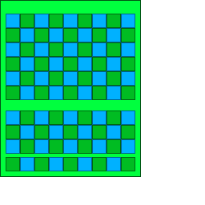
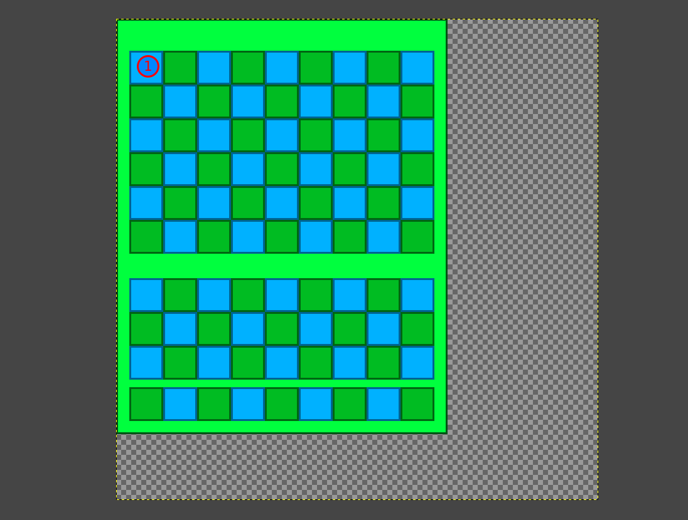
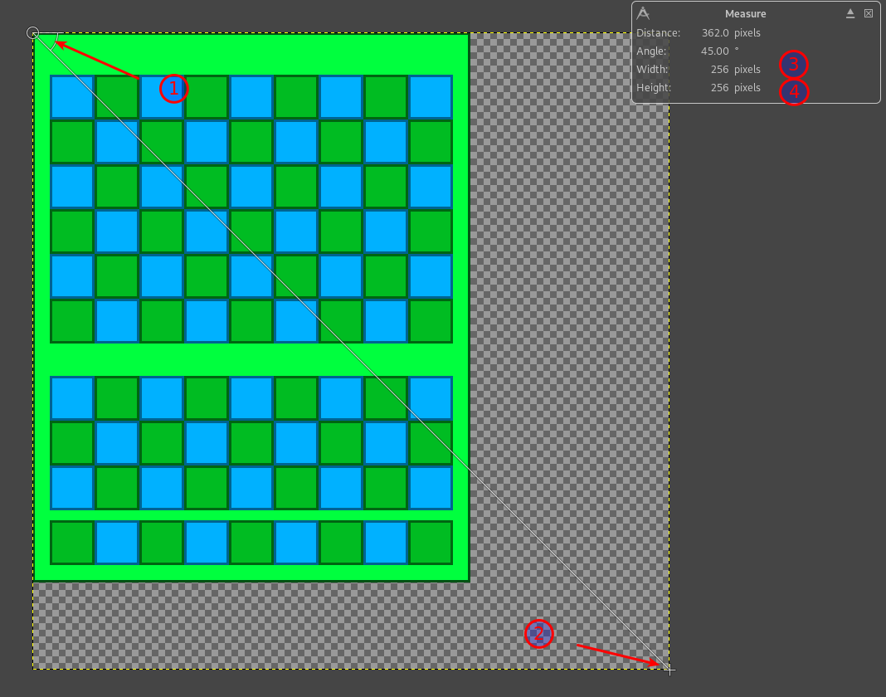
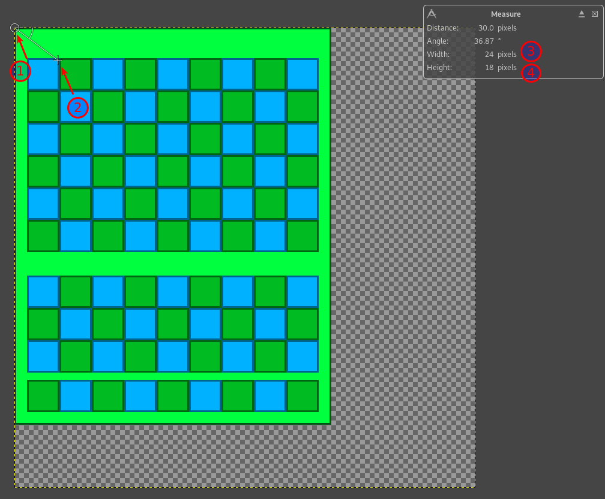
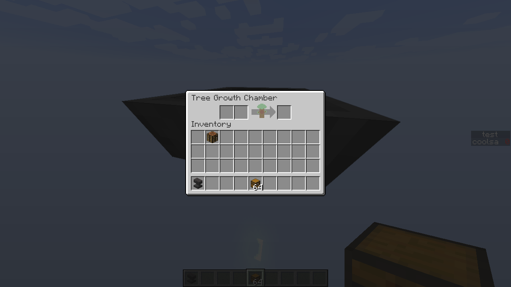

When this is clicked, all the text written here will be selected.
This makes it easy to copy and paste the generated model.
Nothing has been generated yet.
The above is the output for the generator, it will not select this and the below.
Also, note that if the third value for the translation is above 70, the results may not be entirely accurate.
This is the guide on how to use this tool.
This tool requests the image dimensions and the top right position of the spot where the item will be centered.
Below is an example of the process to create your own, or a very basic guide.
Lets say I have an inventory, like this custom double chest here:

I want to put the item that this inventory will render as into the top left corner of this, to render overtop of the original inventory, where the 1 is.

So to do so, I must measure the total size of the image. This one is 256 wide by 256 high, and enter those numbers into the Image dimensions inputs at the top.

Afterwards, I must measure the top right pixel of where I want the item to be positioned.

Then I put this into my resource pack as the model for the item, and when put into the spot where I want to position the item in the inventory, it renders as such.

By following these rough steps, it should be possible for you to create your own using this tool.